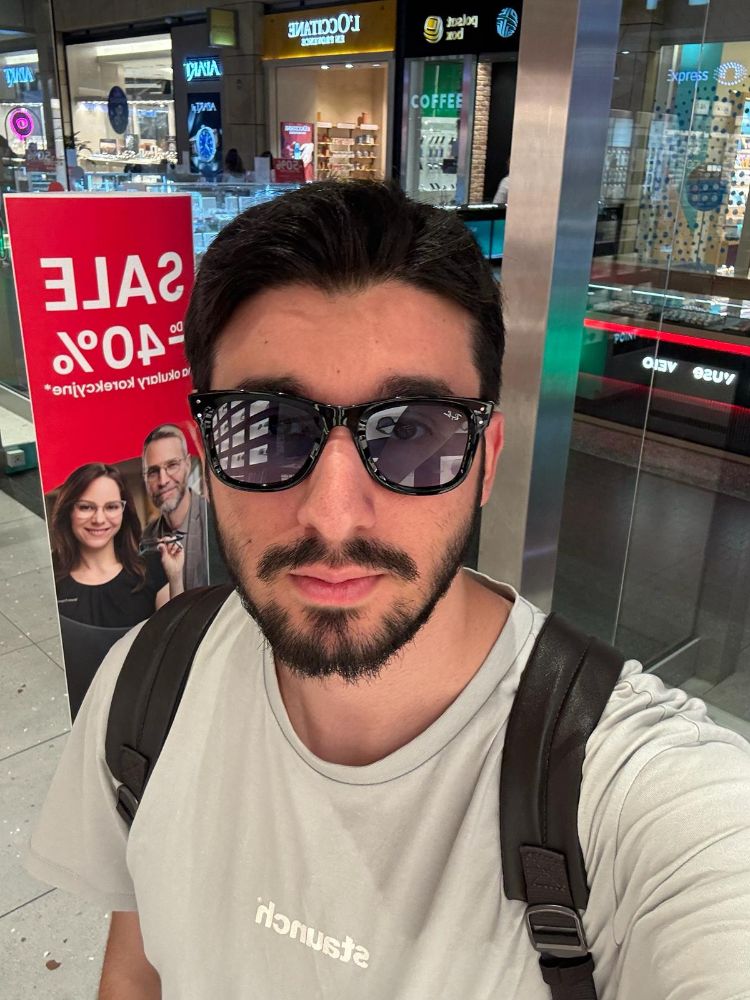

Mobil Celebi
2021–2023
Było to moje doświadczenie startupowe. Poznawałem tam pracę nad pomysłami cyfrowymi i uczyłem się przedsiębiorczości.

Student Computer Engineering na Vistula University
E-mail: isaitak1@stu.vistula.edu.pl
Telefon: +48 575457698
Miasto: Warszawa
GitHub: https://github.com/76023
LinkedIn: profil LinkedIn
Blog: https://ibrahimsait.blog
Jestem studentem Computer Engineering na Vistula University. Interesuję się programowaniem, startupami, sztuczną inteligencją i blockchainem. Chcę rozwijać się technicznie i biznesowo. W przyszłości chciałbym zbudować dużą firmę technologiczną, która będzie pozytywnie wpływać na świat. Na moim blogu nie można też zapomnieć o zagraniu w Tetrisa.
2021–2023
Było to moje doświadczenie startupowe. Poznawałem tam pracę nad pomysłami cyfrowymi i uczyłem się przedsiębiorczości.
2025–obecnie
Odpowiadam za sprawy IT, pomagam przy narzędziach cyfrowych i wspieram inicjatywy studenckie.
Vistula University, Computer Engineering, 2 semestr.